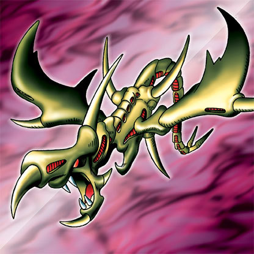

Curse of Dragon

Description: "Transforms the occupied space into WASTELAND terrain when engaging in a battle."
STATS
ATK: 2000
DEF: 1500DECK COST
Deck Cost per Card: 40EFFECT IS IMPLEMENTED!
Fusion List (16 Possible Fusions)
- Curse of Dragon + Time Wizard = Thousand Dragon
- Curse of Dragon + Bolt Escargot = Twin-Headed Thunder Dragon
- Curse of Dragon + Bolt Penguin = Twin-Headed Thunder Dragon
- Curse of Dragon + Electric Lizard = Twin-Headed Thunder Dragon
- Curse of Dragon + Electric Snake = Twin-Headed Thunder Dragon
- Curse of Dragon + Gaia The Fierce Knight = Gaia the Dragon Champion
- Curse of Dragon + Kaminari Attack = Twin-Headed Thunder Dragon
- Curse of Dragon + Kaminarikozou = Twin-Headed Thunder Dragon
- Curse of Dragon + LaLa Li-oon = Twin-Headed Thunder Dragon
- Curse of Dragon + Mega Thunderball = Twin-Headed Thunder Dragon
- Curse of Dragon + Oscillo Hero #2 = Twin-Headed Thunder Dragon
- Curse of Dragon + Queen of Autumn Leaves = B. Dragon Jungle King
- Curse of Dragon + Sanga of the Thunder = Twin-Headed Thunder Dragon
- Curse of Dragon + The Immortal of Thunder = Twin-Headed Thunder Dragon
- Curse of Dragon + Thunder Dragon = Twin-Headed Thunder Dragon
- Curse of Dragon + Tripwire Beast = Twin-Headed Thunder Dragon